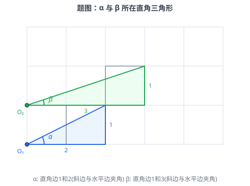
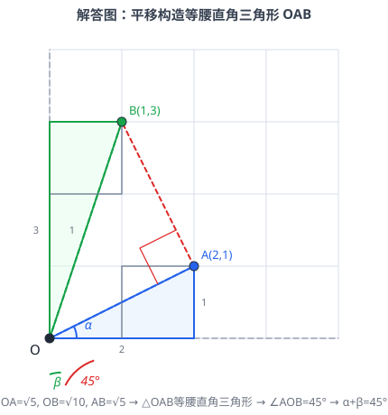

在正方形网格中，某锐角 所在直角三角形的直角边为 和 ，某锐角 所在直角三角形的直角边为 和 ，且两角均为斜边与水平边所夹的锐角，则 ______。

🔍 点击查看原图
| 知识点 | 说明 |
|---|---|
| 网格几何 | 格点三角形的边长可用勾股定理计算 |
| 勾股定理 | 直角三角形： |
| 等腰直角三角形 | 两腰相等的直角三角形，底角为 |
| 互余关系 | 直角三角形两锐角互余，和为 |
| 角度平移法 | 将不同顶点的角平移到公共顶点，便于求和 |
设网格中小正方形边长为 。将 和 所在的直角三角形平移到公共顶点 （原点），使它们的斜边从 出发。
对于 ：直角边为 和 ，斜边水平方向的邻边长为 ，竖直方向的邻边长为 。因此可设 的斜边端点为 ，则 。
对于 ：直角边为 和 ，斜边水平方向的邻边长为 ，竖直方向的邻边长为 。因此可设 的斜边端点为 ，则 。
其中 （ 与水平方向的夹角），（ 与水平方向的夹角）。
由坐标距离公式：
等等——这里 和 在同一水平线上，。这看起来不像是等腰直角三角形。让我们重新审视问题。
重新设置坐标：
所在直角三角形：水平边 ，竖直边 ， 是斜边与水平边的夹角。设顶点 ，。
所在直角三角形：水平边 ，竖直边 ， 是斜边与水平边的夹角。设顶点 ，。
但这样 不是 。问题出在方向——我们需要让 和 在不同方向（一个在水平线上方，一个在水平线下方），或者一个与水平边夹角，一个与竖直边夹角。
设 所在直角三角形：水平边 ，竖直边 ， 是斜边与水平边的夹角。
设 所在直角三角形：水平边 ，竖直边 ， 是斜边与竖直边的夹角。
将两个三角形平移到公共顶点 ：

🔍 点击查看原图
💡 图中：蓝色三角形为 （直角边2和1， 与水平边夹角），绿色三角形为 （直角边3和1， 与竖直边夹角）。虚线为平移到 后的辅助构造——（蓝虚线）与水平方向夹角为 ，（绿虚线）与竖直方向夹角为 ，（红虚线）与 、 构成等腰直角三角形，。
的斜边端点 ，（ 与水平方向 的夹角）。
的斜边端点 （竖直边 ，水平边 ），（ 与竖直方向 的夹角）。
于是 （因为在直角三角形中两锐角互余）。
现在 。注意 。如果能证明 ，则 。
计算三边长：
所以 （两腰相等）。
又因为 ，根据勾股定理逆定理， 是直角三角形，且 。
因此 是等腰直角三角形，于是：
从图中角度关系：
整理得：